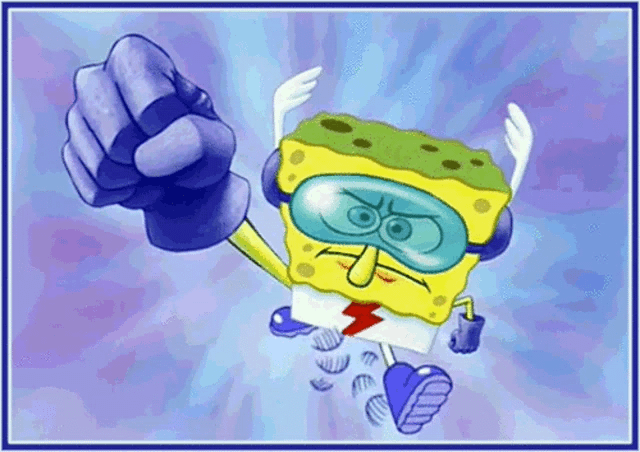

quotes from my friends and me
balls - Coral
me when google chrome is spyware so i switch to goog glhrome
me when the google chrome is google chromeing - TaterCater14
me on my way to download this cool browser

- BebraBro278i am glooghling the chromigiling - objeckshowlover